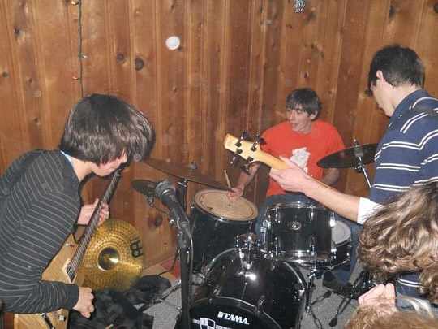

side project / 01
the skin
cells
an american "pop rock band that accidentally ended up being punk", formed in havertown, pennsylvania around 2008.

about the band
the
skin
cells
the skin cells were an american “pop rock that accidentally
ended up being punk” band formed in havertown, pennsylvania
around 2008.
the group consisted of alex giannascoli on guitar and vocals,
samuel acchione on drums, and his brother colin acchione
(aldo fisk) on bass guitar.
aldo fisk
music
official
releases
demo(h)
nude years 2013
the skin cells' official releases include
DEMO(H), released in 2012, and
nude years 2013, released in 2013. the latter
contains the track “space beetles”
this page is part of an unofficial fan archive documenting
alex g's early projects, recordings and musical history.